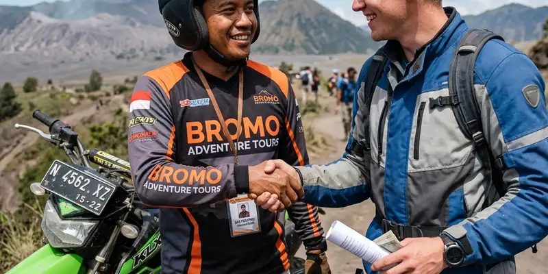

Operator wisata motor trail yang terpercaya dapat dipilih dengan menilai pengalaman menangani berbagai jenis peserta, kelengkapan perlengkapan keselamatan, serta kejelasan cakupan paket yang ditawarkan.
Ringkasan Inti
- Pengalaman operator menangani berbagai jenis peserta menjadi indikator kualitas layanan.
- Kelengkapan apparel dan standar keselamatan wajib menjadi prioritas dalam pemilihan operator.
- Kejelasan cakupan paket membantu peserta mempersiapkan anggaran dan kebutuhan tambahan.
- Operator yang transparan mengenai batasan penggunaan motor trail lebih layak dipercaya.
- Referensi dari peserta sebelumnya dapat membantu menilai kredibilitas operator secara objektif.
Bagaimana Cara Memilih Operator Motor Trail Wisata yang Tepat
Cara memilih operator motor trail wisata yang tepat dimulai dengan mengecek pengalaman operator dalam menangani peserta dengan latar belakang berbeda, termasuk peserta solo maupun kelompok kecil.
Operator yang berpengalaman umumnya memiliki rute yang telah disesuaikan untuk berbagai tingkat kemampuan, mulai dari fun trail ramah pemula hingga jalur yang lebih menantang bagi rider berpengalaman. Kejelasan mengenai tingkat kesulitan rute ini penting agar peserta dapat memilih paket yang sesuai dengan kemampuan masing-masing.
Selain pengalaman menangani peserta, operator yang baik juga biasanya transparan mengenai cakupan paket, termasuk perlengkapan yang disediakan, durasi perjalanan, serta hal-hal yang tidak termasuk dalam paket seperti asuransi atau obat-obatan pribadi.

Komunikasi yang transparan dengan operator lokal membantu Anda mendapatkan paket perjalanan yang sesuai dengan kebutuhan spesifik Anda.
Apa Saja Kriteria Operator Motor Trail yang Terpercaya
Kriteria operator motor trail yang terpercaya mencakup kelengkapan perlengkapan keselamatan, kejelasan informasi paket, serta kehadiran pemandu berpengalaman yang mendampingi peserta sepanjang perjalanan.
Operator yang baik umumnya menyediakan perlengkapan lengkap seperti motor trail, apparel keselamatan, serta pendampingan leader selama perjalanan, mengikuti standar yang serupa dengan paket yang mencakup motor, apparel lengkap, leader, tiket, snack dan drink, serta dokumentasi video. Kelengkapan ini menjadi indikator bahwa operator memahami kebutuhan menyeluruh peserta selama kegiatan.
Selain itu, operator yang transparan mengenai batasan penggunaan motor trail, misalnya menegaskan bahwa motor khusus untuk jalur offroad dan wisata alam dan tidak diperkenankan digunakan di jalan-jalan utama, menunjukkan kejelasan aturan yang membantu peserta memahami cara penggunaan kendaraan secara bertanggung jawab.
Apa Risiko Memilih Operator yang Kurang Berpengalaman
Risiko memilih operator yang kurang berpengalaman meliputi standar keselamatan yang tidak terjamin, rute yang tidak sesuai dengan kemampuan peserta, hingga koordinasi lapangan yang kurang rapi selama perjalanan berlangsung.
Operator yang minim pengalaman berisiko kurang memahami kebutuhan spesifik peserta, misalnya menempatkan peserta pemula pada rute yang sebenarnya lebih cocok untuk rider berpengalaman. Hal ini dapat meningkatkan risiko kecelakaan maupun pengalaman yang kurang menyenangkan bagi peserta.
Selain itu, operator yang kurang transparan mengenai cakupan paket dapat menimbulkan kebingungan di lapangan, misalnya terkait perlengkapan yang ternyata tidak disediakan atau biaya tambahan yang tidak diinformasikan sejak awal.
Bagaimana Memverifikasi Kredibilitas Operator Sebelum Booking
Kredibilitas operator dapat diverifikasi dengan menanyakan detail paket secara langsung, memeriksa ulasan dari peserta sebelumnya, serta memastikan kejelasan kontak resmi operator sebelum melakukan pemesanan.
Menghubungi operator secara langsung untuk menanyakan detail rute, tingkat kesulitan, dan cakupan perlengkapan dapat membantu calon peserta menilai seberapa transparan dan responsif operator tersebut dalam memberikan informasi.
Selain itu, memeriksa ulasan atau testimoni dari peserta sebelumnya, baik melalui media sosial maupun platform ulasan, dapat memberi gambaran lebih objektif mengenai kualitas layanan yang ditawarkan operator sebelum memutuskan untuk melakukan pemesanan.
Kesimpulan
Memilih operator motor trail wisata yang tepat memerlukan penilaian menyeluruh terhadap pengalaman, kelengkapan perlengkapan, dan transparansi informasi paket yang ditawarkan. Dengan kriteria yang jelas dan verifikasi kredibilitas sebelum booking, peserta solo maupun kelompok kecil dapat menikmati pengalaman offroad motor yang aman dan sesuai ekspektasi.
FAQ
Disarankan, terutama pada musim liburan, karena ketersediaan slot dan motor trail dapat terbatas pada operator tertentu.
Banyak operator menyediakan variasi rute, namun sebaiknya dikonfirmasi langsung untuk memastikan kesesuaian dengan tingkat pengalaman peserta.
Tidak selalu, karena beberapa komponen seperti asuransi atau perlengkapan pribadi tertentu bisa jadi tidak termasuk dalam harga paket dasar.